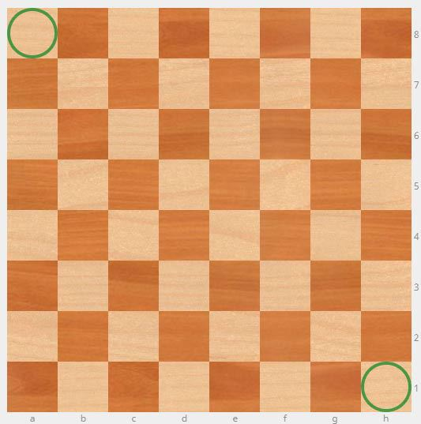
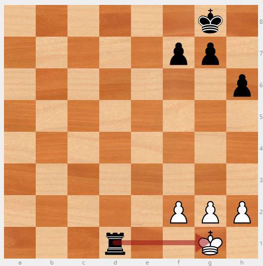
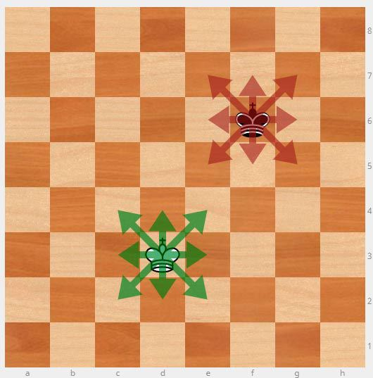
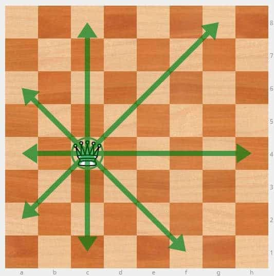
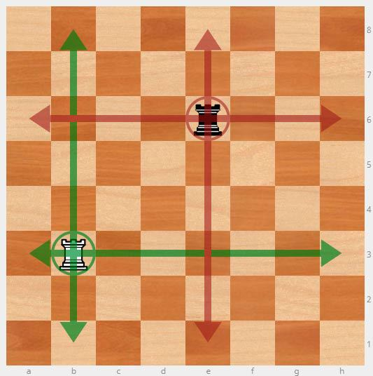
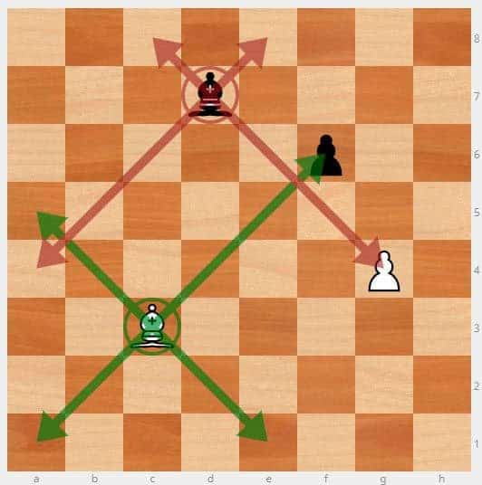
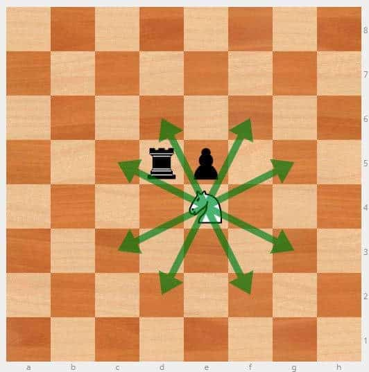
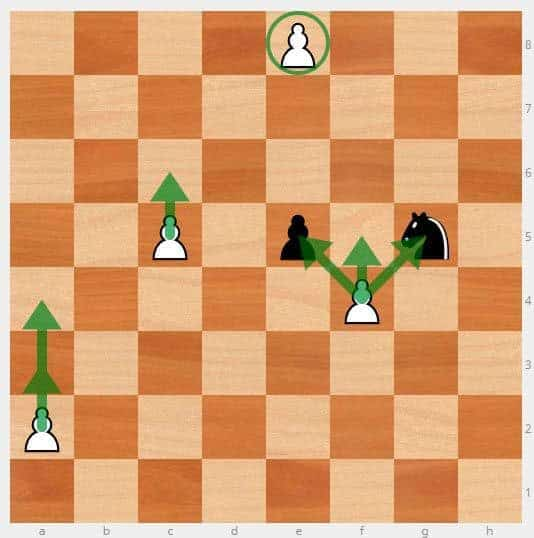
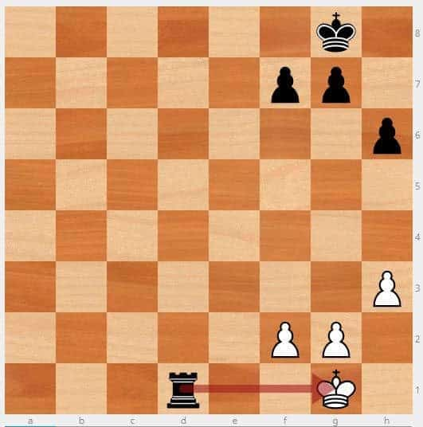
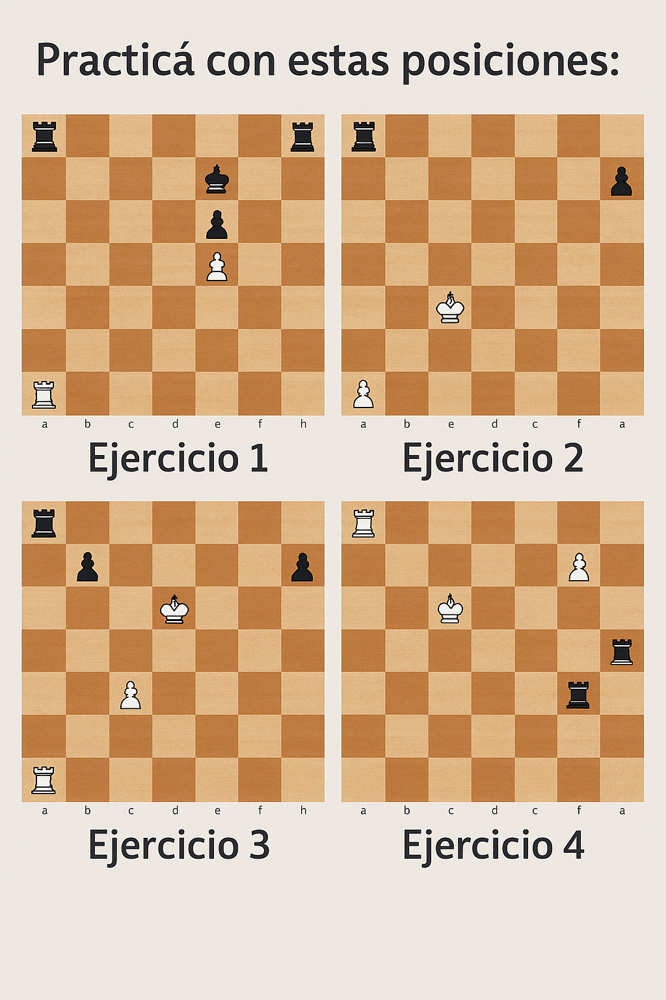

Guía completa para principiantes, paso a paso
El ajedrez es un juego milenario de estrategia donde dos jugadores enfrentan su inteligencia para dar jaque mate al rey rival.
El objetivo es inmovilizar al rey del oponente sin que pueda escapar al ataque. Esta jugada se llama jaque mate.
El tablero tiene 8x8 casillas. Cada jugador cuenta con:
Se mueve una casilla en cualquier dirección.
Combina los movimientos de la torre y el alfil.
Se mueve en línea recta, horizontal o vertical.
Solo en diagonales.
Forma de L: dos casillas en una dirección y una en perpendicular.
Avanza recto pero captura en diagonal. Puede mover dos casillas en su primer turno.
Cuando un rey está amenazado pero puede escapar, es un jaque. Si no tiene salida, es jaque mate.
Practicá con estas posiciones:
